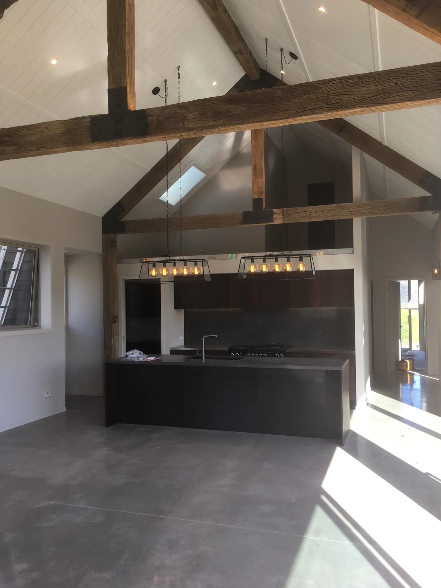

Start with the specification
We discuss the scope, selected systems and colours with you. If we identify a more suitable approach, we raise it before work progresses.
QUALITY CONTROL
Quality is built into the work at every stage, from the first discussion to the final inspection.

We discuss the scope, selected systems and colours with you. If we identify a more suitable approach, we raise it before work progresses.
Each trade is undertaken by people with the relevant experience. Regular site discussions keep the work coordinated.
After sanding, we check the stopping and plastering against the specified finish before painting begins.
Painting projects are checked after the undercoat, with a further inspection when the paint system is complete.
Contact JFS to discuss inspection, handover and sign-off requirements for your project.
NO SURPRISES AT THE FINISH
Decisions about colours, systems and finish levels affect the whole result. We discuss them early, follow the agreed specification and keep the right people involved as work moves forward.
Discuss your projectLET’S BUILD SOMETHING GOOD
Tell us what you have in mind. We’ll take it from there.